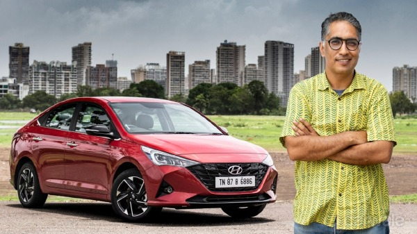
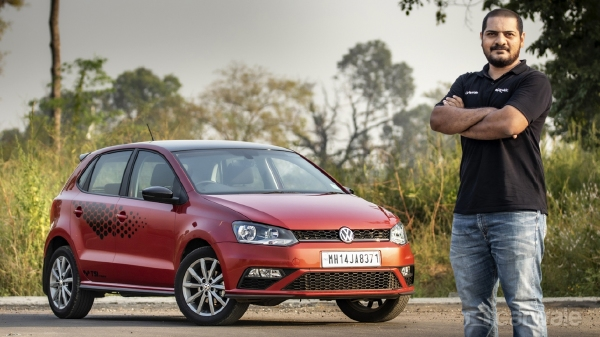
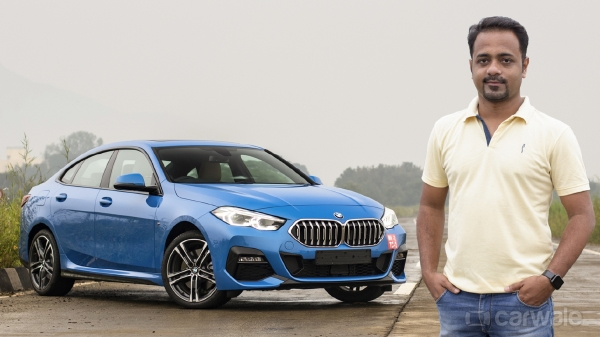
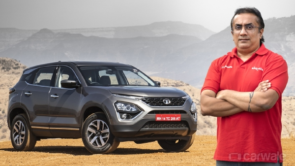

|

Introduction
It’s been over 1000km since I started using the Hyundai Verna Turbo as my long-term car.
And so far, I have predominantly used the car in the city. As it turns out, pandemic or not,
I have been making quite a few office runs in this period. And, the Mumbai peak hour traffic is almost at its worst already
I love that all the new top-spec Hyundai cars now come with wireless charging. |

Introduction
Why would I buy one |

Introduction
Why would I buy one |

Introduction
Think Tata Harrier, and I bet the first thing that comes to your mind is a true-blue SUV with
immense road presence that simply loves to flaunt its gorgeous curves.
Come 2020, and the Tata Harrier is now not just BS6 compliant with about 30bhp more,
it also boasts of an automatic gearbox version with additional equipment.
For now, this automatic has got serious competition from the Kia Seltos, Hyundai Creta, and the Jeep Compass.
A blacked-out roof can be seen smoothly blending the roof to the tail portion with
the signature ‘arrow’ tail lamps that sport snazzy LED internals. |